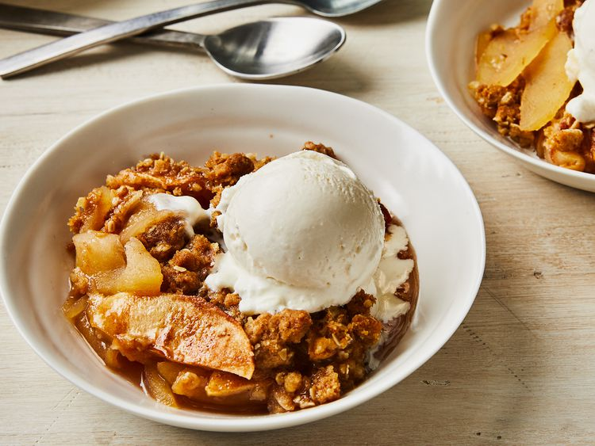

Apple Crisp
This apple crisp recipe is a simple yet delicious fall dessert that's great served warm with vanilla icecream.


This apple crisp recipe is a simple yet delicious fall dessert that's great served warm with vanilla icecream.